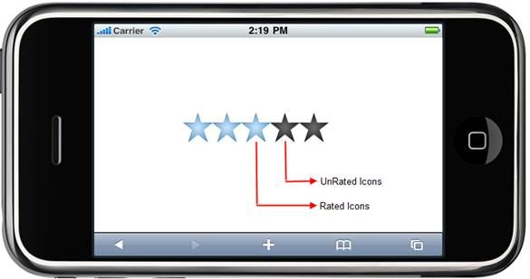

The Essential Tools Mobile rating control for ASP.NET MVC provides an intuitive rating experience that allows the end-user to select a number of stars that represent a rating.
Key Features
· Full, half, and exact precision support
· Horizontal and vertical orientation support
· Editable and read-only mode support
· Four built-in skins
Use Case scenarios
The rating control allows the end-user to select a number of stars that represent a rating.
· The user can now experience precise ratings, instead of rounded-off values
· You can customize the way the rating control works-
o The numerical data associated with each “star” control
o The skins for each rating control
Structure of the Rating Control
The following figure depicts the important sections of the rating control.

Figure 97: Structure of Rating Control
 Adding the Rating Control to an Mobile ASP.NET
MVC application
Adding the Rating Control to an Mobile ASP.NET
MVC application